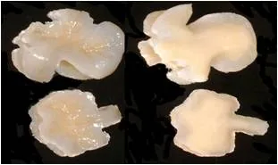

충치 치료
충치(치아우식증)는 입안 세균인 뮤탄스균이 당분을 분해하며 만든 산에 치아가 녹는 병입니다. 법랑질이나 상아질까지 썩었을 때는 썩은 부분을 덜어 내고 메우고, 신경까지 썩으면 신경치료를 합니다. 메우는 방법은 충치 크기에 따라 레진, 인레이(레진·테세라·골드)로 정합니다.
기존 홈페이지 2026년 11월 내용 기준
한눈에 보기
- 진행
- 법랑질 → 상아질 → 신경
- 치료
- 레진 충전 · 레진 인레이·테세라 · 골드 인레이 · 신경치료
- 장비
- TESCERA ATL(레진 인레이 제작)
- 비용
- 진찰 후 항목별로 미리 안내합니다


충치는 세 단계로 깊어집니다
법랑질만 썩은 경우
통증이 없고 까만 점이나 줄로 보입니다. 치료가 필요 없는 경우도 있으며, 치료할 때는 썩은 부분을 덜어 내고 메웁니다.
상아질까지 썩은 경우
차고 뜨거운 것에 시린 느낌이 들기 시작합니다. 썩은 부분을 덜어 내고 충전 재료로 메웁니다.
신경까지 썩은 경우
심한 통증이 있고 뜨겁고 찬 것에 더 민감해집니다. 신경치료를 합니다.
충치를 메우는 방법
레진 충전
크지 않은 충치를 치아색 레진으로 바로 메웁니다. 본을 뜨지 않고 그 자리에서 메우지만, 레진 인레이보다는 덜 안정적입니다.

레진 인레이·테세라
썩은 부분을 덜어 내고 본을 떠서 만든 레진 조각으로 메웁니다. 입을 벌리면 잘 보이는 아랫니 씹는 면을 치아색으로 메워 치료한 흔적이 덜 보입니다.
골드 인레이
충치 자리를 금으로 본을 떠서 메웁니다. 윗어금니처럼 잘 보이지 않는 자리에 주로 씁니다.
자주 묻는 질문
충치는 언제 신경치료를 하나요?
충치가 신경까지 진행해 심한 통증이 있고 뜨겁고 찬 것에 더 민감해지면 신경치료를 합니다. 법랑질이나 상아질까지만 썩었으면 썩은 부분을 덜어 내고 메웁니다.
레진과 인레이는 어떻게 다른가요?
레진은 크지 않은 충치를 그 자리에서 바로 메우는 방법이고, 인레이는 본을 떠서 만든 조각을 붙이는 방법입니다. 레진은 레진 인레이보다 덜 안정적이라, 충치 크기를 보고 정합니다.
진료시간 · 오시는 길
031-683-7575경기도 평택시 안중읍 안중로 132
- 성심주차장을 이용하시면 주차권에 병원 도장을 찍어 드려 무료로 주차할 수 있습니다(이면도로 주차는 유료).
- 본원 뒤 주차장은 자리가 좁습니다. 이용하실 때는 주차권을 받아 가셔야 나가실 수 있습니다.
진료시간
- 월
- 전체
- 오전 9시 ~ 오후 6시교정과 오전 10시 ~ 오후 6시
- 화
- 전체
- 오전 9시 ~ 오후 8시
- 수
- 3층
- 오전 9시 ~ 오후 6시
- 목
- 2층
- 오전 9시 ~ 오후 8시
- 금
- 전체
- 오전 9시 ~ 오후 8시2층 오전 9시 ~ 오후 6시교정과 오후 2시 ~ 8시
- 토
- 전체
- 오전 9시 ~ 오후 2시점심시간 없음
- 점심
- 평일
- 오후 1시 ~ 2시
- 휴진
- 일요일 · 공휴일 휴진
가운데 칸은 그날 진료하는 층입니다.